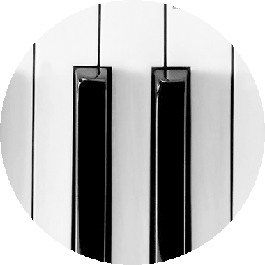

模拟试题
模拟真实的考试氛围，百分百还原考场气氛。模拟试题由艺考级邀请中央音乐学院精英教师团队出题更专业更权威。提前带您进入模拟考场，适应考场气氛已应对各种考试问题。
单项练习
单项练习针对音基备考中的十几个类型的题目，推出各个类型的专项练习题。通过模拟试题中的成绩报告让你了解自身的优缺点，让您有针对性的进行自我的弱点加强。增强薄弱的环节，巩固优势的地方，大大提高考试的通过率。
试唱部分
最贴近考试的视唱模版，让考生提前了解考试标准，训练自己的音准，识谱能力，从而最好的在考试中发挥自己的水平。